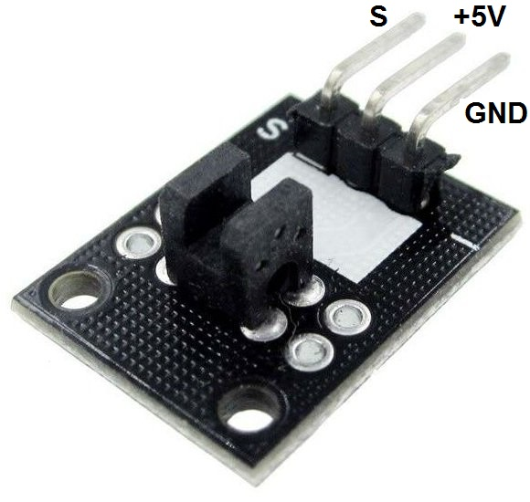
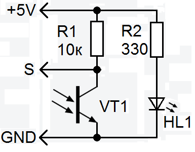
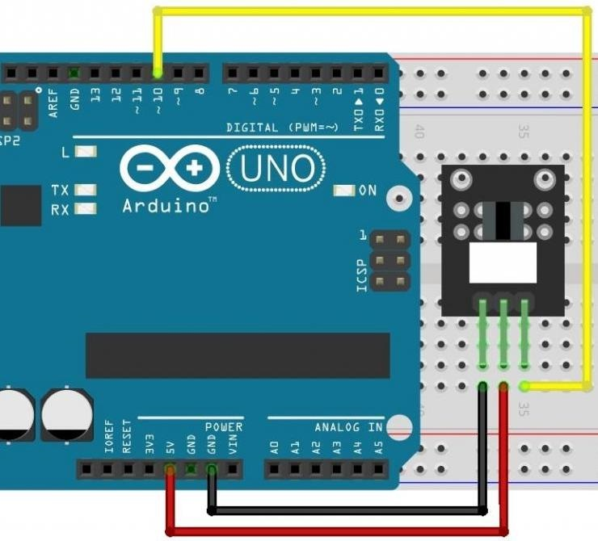

Модуль с оптическим прерывателем KY-010
Модуль KY-010 представляет собой оптический датчик, позволяющий засечь прохождение частей конструкции через инфракрасное излучение. Датчик состоит из фотоприемника и светодиода, направленного в него, а также двух резисторов на обратной стороне (1 кОм и 33 Ом). Когда какой-либо непрозрачный предмет перекрывает прохождение света к фотоприемнику, уровень логического сигнала на выходе датчика меняется.

Модуль KY-010 применяется для считывания оборотов движущихся частей, в качестве датчика пересечения области.

Технические характеристики KY-010:
- Рабочее напряжение — 5 В.
- Ток потребления — от 13 мА.
- Размеры — 20×15×8 мм.
Назначение выводов (рис. 1) представлено в таблице 1.
Таблица 1
| Контакт | Назначение |
|---|---|
| S | Выходной сигнал |
| +5V | +5 В |
| — (GND) | Общий минусовой контакт |
Внимание! На некоторых модулях может быть нанесена неправильная разметка контактов.

Скетч №1
Когда перекрывается прохождение света к фотоприемнику встроенный светодиод светится. Если свет проходит к фотоприемнику встроенный светодиод не светится
int led=13 ; // назначение вывода для светодиода int dat=10; // назначение вывода для фотодатчика int v; // переменная для хранения состояния фотодатчика void setup() { pinMode(led, OUTPUT); // вывод светодиода работает как выход pinMode(dat, INPUT); // вывод фотодатчика работает как вход } void loop() { v=digitalRead(dat); // чтение состояния фотодатчика if (v==HIGH) // если с фотодатчика появляется высокий уровень { digitalWrite(led, HIGH); // то светодиод светится } else { digitalWrite(led, LOW); // иначе светодиод не светится } }
Источники
tehdoc-study.ru - Модуль с оптическим прерывателем KY-010
arduino-tex.ru - KY-010 – модуль с оптическим прерывателем. Подключение к Arduino.
umnyjdomik.ru - "KY-010" – модуль с оптическим прерывателем для ARDUINO